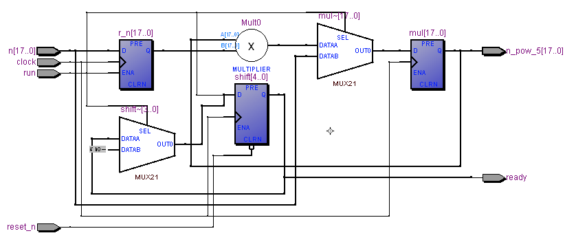
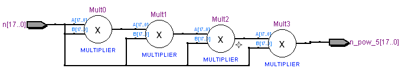
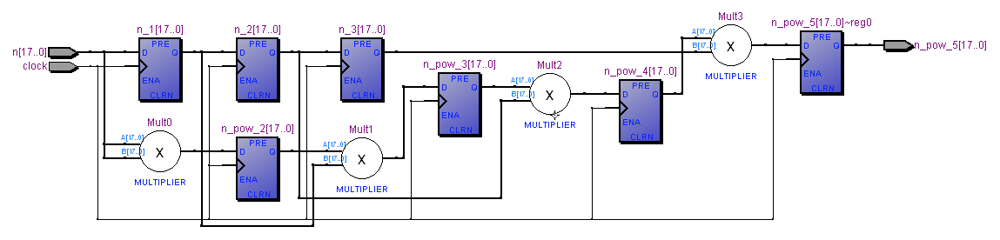
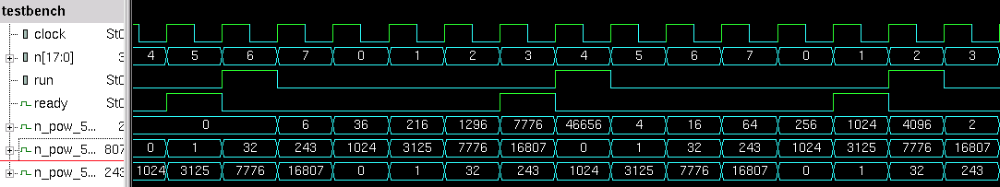

Understanding Digital Logic Design
Joint seminar by Almaty Management University and Imagination Technologies August 23 2016Quiz 2.5 - Combinational, sequential and pipelined implementations of power of 5 math function in hardware
Name ___________________________________________________________________
The code below contains three modules implementing the same functionality, calculating the power of five of a given number. Analyze the code and answer the following questions: module pow_5_implementation_1 ( input clock, input reset_n, input run, input [17:0] n, output ready, output [17:0] n_pow_5 ); reg [4:0] shift; always @(posedge clock or negedge reset_n) if (! reset_n) shift <= 0; else if (run) shift <= 5'b10000; else shift <= shift >> 1; assign ready = shift [0]; reg [17:0] r_n, mul; always @(posedge clock) if (run) begin r_n <= n; mul <= n; end else begin mul <= mul * r_n; end assign n_pow_5 = mul; endmodule //-------------------------------------------------------------------- module pow_5_implementation_2 ( input [17:0] n, output [17:0] n_pow_5 ); assign n_pow_5 = n * n * n * n * n; endmodule //-------------------------------------------------------------------- module pow_5_implementation_3 ( input clock, input [17:0] n, output reg [17:0] n_pow_5 ); reg [17:0] n_1, n_2, n_3; reg [17:0] n_pow_2, n_pow_3, n_pow_4; always @(posedge clock) begin n_1 <= n; n_2 <= n_1; n_3 <= n_2; n_pow_2 <= n * n; n_pow_3 <= n_pow_2 * n_1; n_pow_4 <= n_pow_3 * n_2; n_pow_5 <= n_pow_4 * n_3; end endmodule
1. Which implementation is purely combinational? a) pow_5_implementation_1 b) pow_5_implementation_2 c) pow_5_implementation_3 d) pow_5_implementation_1 and pow_5_implementation_2 e) pow_5_implementation_1 and pow_5_implementation_3 f) pow_5_implementation_2 and pow_5_implementation_3 g) all of them h) none of them
2. Which implementation is sequential? a) pow_5_implementation_1 b) pow_5_implementation_2 c) pow_5_implementation_3 d) pow_5_implementation_1 and pow_5_implementation_2 e) pow_5_implementation_1 and pow_5_implementation_3 f) pow_5_implementation_2 and pow_5_implementation_3 g) all of them h) none of them
3. Which implementation is pipelined? a) pow_5_implementation_1 b) pow_5_implementation_2 c) pow_5_implementation_3 d) pow_5_implementation_1 and pow_5_implementation_2 e) pow_5_implementation_1 and pow_5_implementation_3 f) pow_5_implementation_2 and pow_5_implementation_3 g) all of them h) none of them
4. Identify the implementation that corresponds to the following schematics: a) pow_5_implementation_1 b) pow_5_implementation_2 c) pow_5_implementation_3 d) pow_5_implementation_1 and pow_5_implementation_2 e) pow_5_implementation_1 and pow_5_implementation_3 f) pow_5_implementation_2 and pow_5_implementation_3 g) all of them h) none of them 
5. Identify the implementation that corresponds to the following schematics: a) pow_5_implementation_1 b) pow_5_implementation_2 c) pow_5_implementation_3 d) pow_5_implementation_1 and pow_5_implementation_2 e) pow_5_implementation_1 and pow_5_implementation_3 f) pow_5_implementation_2 and pow_5_implementation_3 g) all of them h) none of them 
6. Identify the implementation that corresponds to the following schematics: a) pow_5_implementation_1 b) pow_5_implementation_2 c) pow_5_implementation_3 d) pow_5_implementation_1 and pow_5_implementation_2 e) pow_5_implementation_1 and pow_5_implementation_3 f) pow_5_implementation_2 and pow_5_implementation_3 g) all of them h) none of them 
7. Which implementation is likely to allow the highest maximum frequency (assuming that the outputs of the combinational implementation are connected to clocked register)? a) pow_5_implementation_1 b) pow_5_implementation_2 c) pow_5_implementation_3
8. Which implementation is likely to use the smallest number of gates? a) pow_5_implementation_1 b) pow_5_implementation_2 c) pow_5_implementation_3
9. Which implementation is likely to have the highest throughput (number of calculated pow_5(n) results per seconds)? a) pow_5_implementation_1 b) pow_5_implementation_2 c) pow_5_implementation_3
10. Which implementation is going to have the smallest latency in clock cycles (assuming that the outputs of the combinational implementation are connected to clocked registers)? a) pow_5_implementation_1 b) pow_5_implementation_2 c) pow_5_implementation_3
11. The testbench instantiated all three implementations of pow_5. module testbench; reg clock; reg reset_n; reg run; reg [17:0] n; wire ready; wire [17:0] n_pow_5_implementation_1; wire [17:0] n_pow_5_implementation_2; wire [17:0] n_pow_5_implementation_3; initial begin clock = 1; forever # 50 clock = ! clock; end initial begin repeat (2) @(posedge clock); reset_n <= 0; repeat (2) @(posedge clock); reset_n <= 1; end pow_5_implementation_1 pow_5_implementation_1 (clock, reset_n, run, n, ready, n_pow_5_implementation_1); pow_5_implementation_2 pow_5_implementation_2 (n, n_pow_5_implementation_2); pow_5_implementation_3 pow_5_implementation_3 (clock, n, n_pow_5_implementation_3); integer i; initial begin #0 $dumpvars; $monitor ("clock %b reset_n %b n %d comb %d seq %d run %b ready %b pipe %d", clock, reset_n, n, n_pow_5_implementation_1, n_pow_5_implementation_2, run, ready, n_pow_5_implementation_3); @(posedge reset_n); @(posedge clock); for (i = 0; i < 50; i = i + 1) begin n <= i & 7; run <= (i == 0 || ready); @(posedge clock); end $finish; end endmodule
An engineer simulated the testbench and got the following waveform. However he forgot the order he added the last three signals to the waveform. Can you determine which signal is the output of combinational implementation, sequential non-pipelined implementation and sequential pipelined implementation? a) The order is (from upper n_pow_5... to lower n_pow_5...): combinational, sequential non-pipelined implementation, pipelined b) combinational, pipelined, sequential non-pipelined implementation c) pipelined, combinational, sequential non-pipelined implementation d) pipelined, sequential non-pipelined implementation, combinational e) sequential non-pipelined implementation, combinational, pipelined f) sequential non-pipelined implementation, pipelined, combinational 
Quiz is created by Yuri Panchul